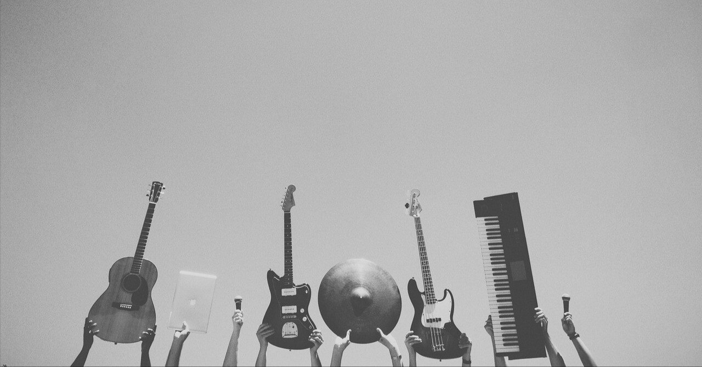

先月に発売され、今週8日にはiTunes Store等より配信開始になったMr.Childrenの新アルバム『miss you』を呆れるほど聴いている。
Vo.桜井さんに「このアルバムで最後にしたい」とまで言わしめた前作『SOUNDTRACKS』から約3年ぶりのアルバム。実に13の新曲たちが収録されている。
その中には、昨年メジャーデビュー30周年を迎えた彼らの、“変わらないミスチルらしさ”と“飽くなき挑戦を続ける気鋭のバンドらしさ”が同居していて、聴くたびに自然と笑みがこぼれてしまう。
本アルバムにはタイアップ曲が存在しない。そのためか、いつにも増して伸び伸びとした曲調が多かったように感じるのは気のせいであろうか。
特に「Fifty's map ～おとなの地図」は、未だ熱烈なファンも多い尾崎豊の「十七歳の地図」に由来したタイトル。若い頃に影響を受けた曲を受け継いで、年を重ねた等身大の姿を彼ららしく表現している。
50歳になっても、17歳の頃に抱えていた葛藤は相変わらずある。かつて命を削るように歌っていた尾崎が生きていたら、この曲をどう思うのだろう。つい、2組が話している様子を妄想してしまう。
好きな音楽家は複数あれど、わざわざ実物のCDを買うのは僕にとってミスチルだけだ。
大抵は音楽配信サイトからダウンロードできてしまう現代。CDを手にすることは、よりその“作品”に触れている感覚にもなれる。
歌詞カードを手元に置きながら、1曲1曲丁寧に聴きこむ。言葉を一言一句漏らさず音を楽しみたいのは、僕の場合ミスチルしかいないのかもしれない。
ミスチル史上、最も「優しい驚き」で満ちている。
今作のキャッチコピーだ。その正体は聴き手それぞれで違うのかもしれないが、僕は僕なりにその驚きを体感できた。
I miss you.
もしミスチルがいなくなってしまったら、恋人が姿を消してしまった時でさえ言わなかった言葉すら、恥ずかしがらずに言えるだろう。彼らの音楽活動は、僕にとってそれだけ大きな存在で、必要不可欠なものなのだ。